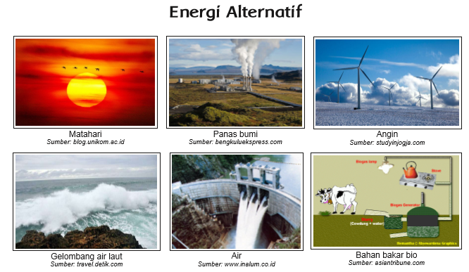

Ayo Belajar
Activity
Sumber energi yang berasal dari minyak bumi dan gas merupakan sumber energi yang tidak dapat diperbarui. Sumber energi ini memiliki ketersediaan yang terbatas dan suatu saat akan habis.
Amatilah gambar berikut. Apakah gambar berikut dapat dimanfaatkan sebagai sumber energi?
